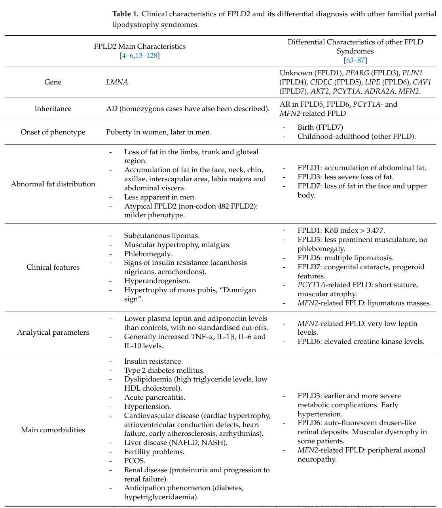

Familial partial lipodystrophy (FPLD) is a group of rare, genetically heterogeneous Mendelian disorders of adipose tissue characterized by selective loss of subcutaneous fat from the limbs and gluteal region, usually beginning around puberty or early adulthood, with relative or excess fat accumulation in the face, neck, and intra-abdominal/visceral depots. The reduced capacity for safe triglyceride storage in subcutaneous adipose tissue drives ectopic lipid deposition, severe insulin resistance, diabetes mellitus, hypertriglyceridemia, and hepatic steatosis, often accompanied by acanthosis nigricans, hypertension, early atherosclerotic cardiovascular disease, and (in women) polycystic ovary syndrome and hyperandrogenism. Multiple genes define the recognized subtypes, most prominently LMNA (FPLD2/Dunnigan) and PPARG (FPLD3), with rarer causes including PLIN1, CIDEC, LIPE, AKT2, CAV1, MFN2, and ADRA2A. FPLD1 (Köbberling) is defined clinically and lacks a consistently identified gene.
Ask a research question about Familial Partial Lipodystrophy. OpenScientist will conduct autonomous deep research using the Disorder Mechanisms Knowledge Base and PubMed literature (typically 10-30 minutes).
Do not include personal health information in your question. Questions and results are cached in your browser's local storage.
name: Familial Partial Lipodystrophy
creation_date: "2026-06-05T12:00:00Z"
category: Mendelian
description: >-
Familial partial lipodystrophy (FPLD) is a group of rare, genetically
heterogeneous Mendelian disorders of adipose tissue characterized by selective
loss of subcutaneous fat from the limbs and gluteal region, usually beginning
around puberty or early adulthood, with relative or excess fat accumulation in
the face, neck, and intra-abdominal/visceral depots. The reduced capacity for
safe triglyceride storage in subcutaneous adipose tissue drives ectopic lipid
deposition, severe insulin resistance, diabetes mellitus, hypertriglyceridemia,
and hepatic steatosis, often accompanied by acanthosis nigricans, hypertension,
early atherosclerotic cardiovascular disease, and (in women) polycystic ovary
syndrome and hyperandrogenism. Multiple genes define the recognized subtypes,
most prominently LMNA (FPLD2/Dunnigan) and PPARG (FPLD3), with rarer causes
including PLIN1, CIDEC, LIPE, AKT2, CAV1, MFN2, and ADRA2A. FPLD1
(Köbberling) is defined clinically and lacks a consistently identified gene.
disease_term:
preferred_term: Familial Partial Lipodystrophy
term:
id: MONDO:0020088
label: familial partial lipodystrophy
parents:
- partial lipodystrophy
- inherited lipodystrophy
synonyms:
- FPLD
- familial partial lipodystrophy
- familial lipodystrophy, partial
- partial lipodystrophy, familial
has_subtypes:
- name: FPLD1
display_name: FPLD1 (Köbberling type)
description: >-
Köbberling-type familial partial lipodystrophy with subcutaneous fat loss
confined predominantly to the limbs and sparing of the trunk; defined
clinically, with no consistently identified causal gene to date. Associated
with insulin resistance and metabolic complications.
subtype_term:
preferred_term: FPLD1 (Köbberling type)
term:
id: MONDO:0012072
label: familial partial lipodystrophy, Kobberling type
- name: FPLD2
display_name: FPLD2 (Dunnigan type, LMNA)
description: >-
The most common genetic form, caused by autosomal dominant pathogenic
variants in LMNA (commonly missense variants at codon 482, e.g., R482W/R482Q).
Progressive loss of subcutaneous fat from limbs, buttocks, and trunk with
relative accumulation in the face, neck, and intra-abdominal depots; muscular
appearance and prominent veins are characteristic.
subtype_term:
preferred_term: FPLD2 (Dunnigan type)
term:
id: MONDO:0007906
label: familial partial lipodystrophy, Dunnigan type
- name: FPLD3
display_name: FPLD3 (PPARG)
description: >-
Caused by loss-of-function pathogenic variants in PPARG (PPARgamma), the
master regulator of adipogenesis. Often a severe insulin-resistant metabolic
phenotype with high rates of hypertriglyceridemia, diabetes, hypertension,
PCOS, and fatty liver disease; lipoatrophy may be less pronounced than FPLD2.
subtype_term:
preferred_term: FPLD3 (PPARG-related)
term:
id: MONDO:0011448
label: PPARG-related familial partial lipodystrophy
- name: FPLD4
display_name: FPLD4 (PLIN1)
description: >-
Caused by pathogenic variants in PLIN1 (perilipin-1), a key lipid-droplet
coat protein. Impaired lipid-droplet biology leads to partial lipodystrophy
with metabolic complications.
subtype_term:
preferred_term: FPLD4 (PLIN1-related)
term:
id: MONDO:0013478
label: PLIN1-related familial partial lipodystrophy
- name: FPLD5
display_name: FPLD5 (CIDEC)
description: >-
Autosomal recessive partial lipodystrophy caused by biallelic CIDEC variants,
affecting lipid-droplet formation and unilocular lipid storage in adipocytes.
subtype_term:
preferred_term: FPLD5 (CIDEC-related)
term:
id: MONDO:0014098
label: CIDEC-related familial partial lipodystrophy
- name: FPLD6
display_name: FPLD6 (LIPE)
description: >-
Autosomal recessive (biallelic) partial lipodystrophy caused by
loss-of-function variants in LIPE (hormone-sensitive lipase), with a
distinctive fat redistribution pattern and metabolic disturbances.
subtype_term:
preferred_term: FPLD6 (LIPE-related)
term:
id: MONDO:0014431
label: LIPE-related familial partial lipodystrophy
- name: AKT2
display_name: AKT2-related partial lipodystrophy
description: >-
Partial lipodystrophy with severe insulin resistance and diabetes caused by
dominant-negative variants in AKT2, a central kinase of the insulin/PI3K-AKT
signaling pathway.
subtype_term:
preferred_term: AKT2-related familial partial lipodystrophy
term:
id: MONDO:0019192
label: AKT2-related familial partial lipodystrophy
- name: CAV1
display_name: CAV1-related partial lipodystrophy (FPLD7)
description: >-
Partial lipodystrophy caused by variants in CAV1 (caveolin-1), a structural
protein of adipocyte caveolae important for lipid uptake and storage.
- name: ADRA2A
display_name: ADRA2A-related partial lipodystrophy
description: >-
Partial lipodystrophy reported in association with ADRA2A
(alpha-2A adrenergic receptor), implicated in regulation of adipocyte
lipolysis.
pathophysiology:
- name: Impaired adipocyte differentiation and adipose storage capacity
description: >-
The unifying defect across FPLD subtypes is failure of subcutaneous adipose
tissue to develop and/or store triglycerides normally, owing to disruption of
adipogenesis, lipid-droplet biology, or adipocyte maintenance. This produces
selective loss of subcutaneous fat from the limbs and gluteal region.
cell_types:
- preferred_term: Adipocyte
term:
id: CL:0000136
label: adipocyte
biological_processes:
- preferred_term: Fat cell differentiation (adipogenesis)
term:
id: GO:0045444
label: fat cell differentiation
modifier: DECREASED
- preferred_term: Regulation of lipid storage
term:
id: GO:0010883
label: regulation of lipid storage
modifier: DECREASED
locations:
- preferred_term: Subcutaneous adipose tissue
term:
id: UBERON:0002190
label: subcutaneous adipose tissue
evidence:
- reference: PMID:39398333
reference_title: "Familial partial lipodystrophy resulting from loss-of-function PPARγ pathogenic variants: phenotypic, clinical, and genetic features."
supports: SUPPORT
evidence_source: HUMAN_CLINICAL
snippet: >-
PPARγ plays an essential role in adipogenesis, stimulating the
differentiation of preadipocytes into adipocytes. Loss-of-function
pathogenic variants in PPARG reduce the activity of the PPARγ receptor and
can lead to severe metabolic consequences associated with familial partial
lipodystrophy type 3 (FPLD3).
explanation: >-
Establishes impaired adipogenesis (via PPARgamma loss of function) as a
core mechanism producing the lipodystrophy and metabolic phenotype.
downstream:
- target: Ectopic lipid deposition and systemic insulin resistance
description: >-
Reduced subcutaneous storage capacity diverts lipid to ectopic sites,
driving systemic insulin resistance.
- name: LMNA nuclear-lamina dysfunction and adipocyte loss (FPLD2)
description: >-
In FPLD2 (Dunnigan), pathogenic LMNA variants (commonly codon 482) perturb
lamin A/C structure and lamin-chromatin (lamina-associated domain)
interactions required for adipocyte differentiation and maintenance, with
suppression of lipid-metabolism and mitochondrial programs and an intrinsic
inflammatory transcriptional signature. (Adipocyte-specific Lmna-knockout
mouse data supporting a cell-autonomous role for lamin A/C in adipocyte
maintenance are summarized in the entry notes.)
cell_types:
- preferred_term: Adipocyte
term:
id: CL:0000136
label: adipocyte
biological_processes:
- preferred_term: Chromatin organization
term:
id: GO:0006325
label: chromatin organization
modifier: ABNORMAL
- preferred_term: Lipid metabolic process
term:
id: GO:0006629
label: lipid metabolic process
modifier: DECREASED
- preferred_term: Inflammatory response
term:
id: GO:0006954
label: inflammatory response
modifier: INCREASED
evidence:
- reference: PMID:39125589
reference_title: "Navigating Lipodystrophy: Insights from Laminopathies and Beyond."
supports: SUPPORT
evidence_source: HUMAN_CLINICAL
snippet: >-
Research on laminopathies has highlighted how LMNA mutations disrupt
adipose tissue function and metabolic regulation, leading to altered fat
distribution and metabolic pathway dysfunctions.
explanation: >-
Supports LMNA-driven disruption of adipose tissue function and metabolic
regulation as the FPLD2 mechanism.
downstream:
- target: Ectopic lipid deposition and systemic insulin resistance
description: >-
LMNA-driven adipose dysfunction feeds the shared ectopic-lipid and
insulin-resistance cascade.
- name: Ectopic lipid deposition and systemic insulin resistance
description: >-
The limited subcutaneous storage capacity forces triglycerides into ectopic
sites (liver, muscle, viscera), driving severe insulin resistance,
hypertriglyceridemia, type 2 diabetes, hepatic steatosis, and downstream
cardiometabolic disease.
cell_types:
- preferred_term: Adipocyte
term:
id: CL:0000136
label: adipocyte
biological_processes:
- preferred_term: Lipid metabolic process
term:
id: GO:0006629
label: lipid metabolic process
modifier: ABNORMAL
locations:
- preferred_term: Liver
term:
id: UBERON:0002107
label: liver
evidence:
- reference: PMID:39125589
reference_title: "Navigating Lipodystrophy: Insights from Laminopathies and Beyond."
supports: SUPPORT
evidence_source: HUMAN_CLINICAL
snippet: >-
their associated metabolic complications, such as insulin resistance,
hypertriglyceridemia, hepatic steatosis, and metabolic syndrome, all of
which elevate the risk of cardiovascular disease, stroke, and diabetes.
explanation: >-
Supports the downstream cascade of insulin resistance, hypertriglyceridemia,
hepatic steatosis, and cardiovascular risk arising from adipose dysfunction.
phenotypes:
- name: Partial loss of subcutaneous fat
category: Physical
description: >-
Selective loss of subcutaneous adipose tissue from the limbs and gluteal
region with relative accumulation in face, neck, and abdomen; muscular
appearance and prominent veins are common, especially in FPLD2.
phenotype_term:
preferred_term: Loss of subcutaneous adipose tissue in limbs
term:
id: HP:0003635
label: Loss of subcutaneous adipose tissue in limbs
evidence:
- reference: PMID:38887266
reference_title: "Comprehensive analysis of morbidity and mortality patterns in familial partial lipodystrophy patients: insights from a population study."
supports: SUPPORT
evidence_source: HUMAN_CLINICAL
snippet: >-
familial partial lipodystrophy (FPLD), a rare genetic disorder
characterized by partial subcutaneous fat loss.
explanation: >-
Defines the hallmark partial subcutaneous fat loss of FPLD in a
genetically confirmed cohort.
- name: Insulin resistance
category: Laboratory
phenotype_term:
preferred_term: Insulin resistance
term:
id: HP:0000855
label: Insulin resistance
evidence:
- reference: PMID:39125589
reference_title: "Navigating Lipodystrophy: Insights from Laminopathies and Beyond."
supports: SUPPORT
evidence_source: HUMAN_CLINICAL
snippet: >-
their associated metabolic complications, such as insulin resistance,
hypertriglyceridemia, hepatic steatosis, and metabolic syndrome
explanation: >-
Lists insulin resistance among the core metabolic complications of FPLD.
- name: Diabetes mellitus
category: Laboratory
frequency: FREQUENT
phenotype_term:
preferred_term: Diabetes mellitus
term:
id: HP:0000819
label: Diabetes mellitus
evidence:
- reference: PMID:38887266
reference_title: "Comprehensive analysis of morbidity and mortality patterns in familial partial lipodystrophy patients: insights from a population study."
supports: SUPPORT
evidence_source: HUMAN_CLINICAL
snippet: "Diabetes mellitus (DM) was highly prevalent (57.5%),"
explanation: >-
Diabetes was present in 57.5% of a genetically confirmed FPLD cohort,
supporting a FREQUENT frequency band.
- name: Hypertriglyceridemia
category: Laboratory
phenotype_term:
preferred_term: Hypertriglyceridemia
term:
id: HP:0002155
label: Hypertriglyceridemia
evidence:
- reference: PMID:38887266
reference_title: "Comprehensive analysis of morbidity and mortality patterns in familial partial lipodystrophy patients: insights from a population study."
supports: SUPPORT
evidence_source: HUMAN_CLINICAL
snippet: >-
severe hypertriglyceridemia (≥ 500 mg/dL) was found in 34.9% and
pancreatitis in 8.5%.
explanation: >-
Documents severe hypertriglyceridemia and consequent pancreatitis in the
FPLD cohort.
- name: Decreased HDL cholesterol
category: Laboratory
description: >-
Low HDL cholesterol is part of the characteristic dyslipidemia of FPLD and a
core component of the metabolic syndrome that accompanies the lipodystrophic
phenotype; it is used as a diagnostic criterion alongside hypertriglyceridemia.
phenotype_term:
preferred_term: Decreased HDL cholesterol concentration
term:
id: HP:0003233
label: Decreased HDL cholesterol concentration
evidence:
- reference: PMID:26775134
reference_title: "A case of familial partial lipodystrophy caused by a novel lamin A/C (LMNA) mutation in exon 1 (D47N)."
supports: SUPPORT
evidence_source: HUMAN_CLINICAL
snippet: >-
Metabolic abnormalities were observed as a form of insulin resistant
diabetes, hypertriglyceridemia, low HDL cholesterol and hepatic steatosis.
explanation: >-
Documents low HDL cholesterol as part of the metabolic abnormalities in an
LMNA-confirmed FPLD2 family.
- name: Pancreatitis
category: Physical
description: >-
Acute pancreatitis can result from severe hypertriglyceridemia.
phenotype_term:
preferred_term: Pancreatitis
term:
id: HP:0001733
label: Pancreatitis
evidence:
- reference: PMID:38887266
reference_title: "Comprehensive analysis of morbidity and mortality patterns in familial partial lipodystrophy patients: insights from a population study."
supports: SUPPORT
evidence_source: HUMAN_CLINICAL
snippet: >-
severe hypertriglyceridemia (≥ 500 mg/dL) was found in 34.9% and
pancreatitis in 8.5%.
explanation: >-
Pancreatitis occurred in 8.5% of the cohort, linked to severe
hypertriglyceridemia.
- name: Hepatic steatosis
category: Physical
frequency: FREQUENT
phenotype_term:
preferred_term: Hepatic steatosis
term:
id: HP:0001397
label: Hepatic steatosis
evidence:
- reference: PMID:38887266
reference_title: "Comprehensive analysis of morbidity and mortality patterns in familial partial lipodystrophy patients: insights from a population study."
supports: SUPPORT
evidence_source: HUMAN_CLINICAL
snippet: "Metabolic-associated fatty liver disease (MAFLD) was observed in 56.6%,"
explanation: >-
MAFLD (hepatic steatosis) was present in 56.6% of FPLD patients,
supporting a FREQUENT frequency band.
- name: Hypertension
category: Physical
phenotype_term:
preferred_term: Hypertension
term:
id: HP:0000822
label: Hypertension
evidence:
- reference: PMID:39398333
reference_title: "Familial partial lipodystrophy resulting from loss-of-function PPARγ pathogenic variants: phenotypic, clinical, and genetic features."
supports: SUPPORT
evidence_source: HUMAN_CLINICAL
snippet: >-
hypertriglyceridemia (91.9% of cases), diabetes (77%), hypertension
(59.5%), polycystic ovary syndrome (58.2% of women)
explanation: >-
Hypertension was present in 59.5% of FPLD3 (PPARG) patients in this review.
- name: Acanthosis nigricans
category: Physical
description: >-
Skin manifestation of severe insulin resistance, recognized among the
FPLD-associated conditions in clinical consensus criteria.
phenotype_term:
preferred_term: Acanthosis nigricans
term:
id: HP:0000956
label: Acanthosis nigricans
- name: Polycystic ovaries
category: Physical
subtype: FPLD3
description: >-
Polycystic ovary syndrome and hyperandrogenism are frequent in women,
particularly in PPARG-related FPLD3.
phenotype_term:
preferred_term: Polycystic ovaries
term:
id: HP:0000147
label: Polycystic ovaries
evidence:
- reference: PMID:39398333
reference_title: "Familial partial lipodystrophy resulting from loss-of-function PPARγ pathogenic variants: phenotypic, clinical, and genetic features."
supports: SUPPORT
evidence_source: HUMAN_CLINICAL
snippet: "polycystic ovary syndrome (58.2% of women)"
explanation: >-
PCOS occurred in 58.2% of women with FPLD3 (PPARG variants).
- name: Atherosclerosis
category: Physical
description: >-
Premature/early atherosclerotic cardiovascular disease is a major
complication and the leading cause of death in FPLD cohorts.
phenotype_term:
preferred_term: Atherosclerosis
term:
id: HP:0002621
label: Atherosclerosis
evidence:
- reference: PMID:38887266
reference_title: "Comprehensive analysis of morbidity and mortality patterns in familial partial lipodystrophy patients: insights from a population study."
supports: SUPPORT
evidence_source: HUMAN_CLINICAL
snippet: >-
cardiovascular disease in 10.4%. The overall mortality rate was 3.8%, due
to cardiovascular events.
explanation: >-
Cardiovascular disease affected 10.4% of patients and accounted for all
deaths, underscoring atherosclerotic CVD as the principal cause of
mortality.
genetic:
- name: LMNA pathogenic variants (FPLD2/Dunnigan)
notes: >-
Autosomal dominant pathogenic variants in LMNA cause FPLD2 (Dunnigan), the
most common genetic form, frequently missense variants at codon 482. LMNA was
the most common genetic cause in a Brazilian cohort (85.8%).
gene_term:
preferred_term: LMNA
term:
id: hgnc:6636
label: LMNA
inheritance:
- name: Autosomal dominant
evidence:
- reference: PMID:38887266
reference_title: "Comprehensive analysis of morbidity and mortality patterns in familial partial lipodystrophy patients: insights from a population study."
supports: SUPPORT
evidence_source: HUMAN_CLINICAL
snippet: "LMNA \npathogenic variants were identified in 85.8% of patients, PPARG in 10.4%, PLIN1 \nin 2.8%, and MFN2 in 0.9%."
explanation: >-
Quantifies the relative contribution of LMNA, PPARG, PLIN1, and MFN2 in a
genetically confirmed FPLD cohort.
- name: PPARG loss-of-function variants (FPLD3)
notes: >-
Loss-of-function pathogenic variants in PPARG (PPARgamma) cause FPLD3 by
reducing activity of the master regulator of adipogenesis.
gene_term:
preferred_term: PPARG
term:
id: hgnc:9236
label: PPARG
inheritance:
- name: Autosomal dominant
evidence:
- reference: PMID:39398333
reference_title: "Familial partial lipodystrophy resulting from loss-of-function PPARγ pathogenic variants: phenotypic, clinical, and genetic features."
supports: SUPPORT
evidence_source: HUMAN_CLINICAL
snippet: >-
Loss-of-function pathogenic variants in PPARG reduce the activity of the
PPARγ receptor and can lead to severe metabolic consequences associated
with familial partial lipodystrophy type 3 (FPLD3).
explanation: >-
Establishes PPARG loss of function as the cause of FPLD3.
- name: PLIN1 pathogenic variants (FPLD4)
notes: >-
Pathogenic variants in PLIN1 (perilipin-1) cause FPLD4; PLIN1 accounted for
2.8% of a genetically confirmed Brazilian FPLD cohort.
gene_term:
preferred_term: PLIN1
term:
id: hgnc:9076
label: PLIN1
evidence:
- reference: PMID:38887266
reference_title: "Comprehensive analysis of morbidity and mortality patterns in familial partial lipodystrophy patients: insights from a population study."
supports: SUPPORT
evidence_source: HUMAN_CLINICAL
snippet: "PLIN1 \nin 2.8%, and MFN2 in 0.9%."
explanation: >-
PLIN1 (FPLD4) and MFN2 were identified as rarer genetic causes in the
cohort.
- name: CIDEC biallelic variants (FPLD5)
notes: >-
Biallelic CIDEC variants cause autosomal recessive FPLD5, impairing
lipid-droplet formation and lipid storage.
gene_term:
preferred_term: CIDEC
term:
id: hgnc:24229
label: CIDEC
inheritance:
- name: Autosomal recessive
- name: LIPE biallelic variants (FPLD6)
notes: >-
Biallelic loss-of-function variants in LIPE (hormone-sensitive lipase) cause
autosomal recessive FPLD6.
gene_term:
preferred_term: LIPE
term:
id: hgnc:6621
label: LIPE
inheritance:
- name: Autosomal recessive
- name: AKT2 dominant-negative variants
notes: >-
Dominant-negative variants in AKT2, a kinase in the insulin/PI3K-AKT pathway,
cause partial lipodystrophy with severe insulin resistance.
gene_term:
preferred_term: AKT2
term:
id: hgnc:392
label: AKT2
- name: CAV1 variants (FPLD7)
notes: >-
Variants in CAV1 (caveolin-1) are associated with partial lipodystrophy
(FPLD7), affecting adipocyte caveolae and lipid storage.
gene_term:
preferred_term: CAV1
term:
id: hgnc:1527
label: CAV1
- name: MFN2 variants
notes: >-
Rare cases of partial lipodystrophy are associated with MFN2; identified in
0.9% of a genetically confirmed FPLD cohort.
gene_term:
preferred_term: MFN2
term:
id: hgnc:16877
label: MFN2
evidence:
- reference: PMID:38887266
reference_title: "Comprehensive analysis of morbidity and mortality patterns in familial partial lipodystrophy patients: insights from a population study."
supports: SUPPORT
evidence_source: HUMAN_CLINICAL
snippet: "PLIN1 \nin 2.8%, and MFN2 in 0.9%."
explanation: >-
MFN2 was a rare cause identified in the genetically confirmed cohort.
- name: ADRA2A variants
notes: >-
ADRA2A (alpha-2A adrenergic receptor) has been reported in association with
partial lipodystrophy and adipocyte lipolysis regulation.
gene_term:
preferred_term: ADRA2A
term:
id: hgnc:281
label: ADRA2A
treatments:
- name: Dietary intervention
description: >-
Balanced calorie-controlled diet (typically ~50-60% carbohydrate, 20-30%
fat, ~20% protein) with reduced simple sugars and alcohol abstinence to
reduce metabolic stress on limited adipose storage capacity and lower
triglyceride/pancreatitis risk.
treatment_term:
preferred_term: dietary intervention
term:
id: MAXO:0000088
label: dietary intervention
- name: Aerobic exercise
description: >-
Regular aerobic exercise (after cardiac evaluation) to improve insulin
sensitivity and cardiometabolic risk.
treatment_term:
preferred_term: aerobic exercise therapy
term:
id: MAXO:0000065
label: aerobic exercise therapy
- name: Metformin
description: >-
First-line pharmacotherapy for hyperglycemia and insulin resistance in FPLD.
therapeutic_modality: SMALL_MOLECULE
treatment_term:
preferred_term: Pharmacotherapy
term:
id: NCIT:C15986
label: Pharmacotherapy
therapeutic_agent:
- preferred_term: metformin
term:
id: CHEBI:6801
label: metformin
- name: Statin therapy
description: >-
First-line lipid-lowering therapy (e.g., atorvastatin) for dyslipidemia.
therapeutic_modality: SMALL_MOLECULE
treatment_term:
preferred_term: Pharmacotherapy
term:
id: NCIT:C15986
label: Pharmacotherapy
therapeutic_agent:
- preferred_term: atorvastatin
term:
id: CHEBI:39548
label: atorvastatin
- name: Fibrate therapy
description: >-
Fibrates (e.g., fenofibrate), often with omega-3 fatty acids, for severe
hypertriglyceridemia (TG > 500 mg/dL) to reduce pancreatitis risk.
therapeutic_modality: SMALL_MOLECULE
treatment_term:
preferred_term: Pharmacotherapy
term:
id: NCIT:C15986
label: Pharmacotherapy
therapeutic_agent:
- preferred_term: fenofibrate
term:
id: CHEBI:5001
label: fenofibrate
- name: Metreleptin
description: >-
Recombinant leptin analog (leptin replacement therapy); a major advance for
generalized lipodystrophy, with more variable benefit in partial forms,
associated with reductions in triglycerides and HbA1c in hypoleptinemic
patients.
therapeutic_modality: PROTEIN_REPLACEMENT
treatment_term:
preferred_term: Pharmacotherapy
term:
id: NCIT:C15986
label: Pharmacotherapy
therapeutic_agent:
- preferred_term: metreleptin
term:
id: NCIT:C170171
label: Metreleptin
- name: GLP-1 receptor agonist therapy
description: >-
Glucagon-like peptide 1 receptor agonists (GLP-1RA) improve weight, BMI,
HbA1c, fasting glucose, and triglycerides in FPLD; acute pancreatitis has
been reported with longer therapy, warranting caution in patients with prior
pancreatitis.
therapeutic_modality: PEPTIDE
treatment_term:
preferred_term: Pharmacotherapy
term:
id: NCIT:C15986
label: Pharmacotherapy
therapeutic_agent:
- preferred_term: liraglutide
term:
id: NCIT:C82239
label: Liraglutide
evidence:
- reference: PMID:38300898
reference_title: "Efficacy and Safety of Glucagon-Like Peptide 1 Agonists in a Retrospective Study of Patients With Familial Partial Lipodystrophy."
supports: SUPPORT
evidence_source: HUMAN_CLINICAL
snippet: >-
Our study demonstrates the relative safety and effectiveness of GLP-1RA in
patients with FPLD.
explanation: >-
Retrospective study supporting GLP-1RA efficacy and relative safety in FPLD,
with a noted pancreatitis signal on longer therapy.
- name: Volanesorsen
description: >-
ApoC-III antisense oligonucleotide investigated for severe
hypertriglyceridemia in FPLD (BROADEN trial); produces large triglyceride
reductions.
therapeutic_modality: ANTISENSE_OLIGONUCLEOTIDE
aso_details:
aso_mechanism: RNASE_H_KNOCKDOWN
target_gene:
preferred_term: APOC3
term:
id: hgnc:610
label: APOC3
target_transcript: APOC3 mRNA
treatment_term:
preferred_term: Pharmacotherapy
term:
id: NCIT:C15986
label: Pharmacotherapy
therapeutic_agent:
- preferred_term: volanesorsen
term:
id: NCIT:C152904
label: Volanesorsen
- name: Genetic counseling
description: >-
Genetic counseling and cascade genetic testing of relatives are recommended
for affected families.
treatment_term:
preferred_term: genetic counseling
term:
id: MAXO:0000079
label: genetic counseling
clinical_trials:
- name: NCT02527343
phase: PHASE_III
status: TERMINATED
description: >-
The BROADEN Study: a randomized, double-blind, placebo-controlled trial of
volanesorsen (ApoC-III antisense oligonucleotide) in participants with
familial partial lipodystrophy, with triglyceride lowering as the primary
endpoint.
target_phenotypes:
- preferred_term: Hypertriglyceridemia
term:
id: HP:0002155
label: Hypertriglyceridemia
evidence:
- reference: clinicaltrials:NCT02527343
supports: SUPPORT
snippet: >-
The purpose of this study is to evaluate the efficacy and safety of
volanesorsen given for 52 weeks in a randomized treatment (RT) period in
participants with familial partial lipodystrophy (FPL).
explanation: >-
The BROADEN trial tested volanesorsen specifically in FPLD, targeting the
severe hypertriglyceridemia that drives pancreatitis risk.
- name: NCT02262806
phase: NOT_APPLICABLE
status: COMPLETED
description: >-
Compassionate use of metreleptin in previously treated people with partial
lipodystrophy (NIDDK).
target_phenotypes:
- preferred_term: Insulin resistance
term:
id: HP:0000855
label: Insulin resistance
evidence:
- reference: clinicaltrials:NCT02262806
supports: SUPPORT
snippet: >-
Partial lipodystrophy can cause high blood fat levels and resistance to
insulin.
explanation: >-
This NIDDK trial provides metreleptin to partial lipodystrophy patients
who benefited previously, addressing insulin resistance and dyslipidemia.
notes: >-
FPLD is typically autosomal dominant for the common forms (LMNA, PPARG), while
CIDEC (FPLD5) and LIPE (FPLD6) are autosomal recessive. FPLD1 (Köbberling) is
defined clinically with no consistently identified gene. Partial lipodystrophy
prevalence is estimated at roughly 1.7-2.8 per million, and diagnostic delay is
substantial (median ~10.5 years for FPLD2 in a French reference-center cohort).
An adipocyte-specific Lmna-knockout mouse recapitulates adipocyte loss,
supporting a cell-autonomous role for lamin A/C. This entry is distinct from
acquired partial lipodystrophy (Barraquer-Simons syndrome, MONDO:0012104),
which is immune/complement-mediated rather than Mendelian. Note: no dedicated
GeneReviews chapter exists for familial partial lipodystrophy (PubMed has no
GeneReviews[Book] record for this condition as of 2026-06); the Fernandez-Pombo
et al. 2023 systematic review is used as the authoritative baseline reference
instead.
references:
- reference: PMID:36899861
title: "Clinical Spectrum of LMNA-Associated Type 2 Familial Partial Lipodystrophy: A Systematic Review."
findings: []
datasets: []
Question: You are an expert researcher providing comprehensive, well-cited information.
Provide detailed information focusing on: 1. Key concepts and definitions with current understanding 2. Recent developments and latest research (prioritize 2023-2024 sources) 3. Current applications and real-world implementations 4. Expert opinions and analysis from authoritative sources 5. Relevant statistics and data from recent studies
Format as a comprehensive research report with proper citations. Include URLs and publication dates where available. Always prioritize recent, authoritative sources and provide specific citations for all major claims.
Please provide a comprehensive research report on Familial Partial Lipodystrophy covering all of the disease characteristics listed below. This report will be used to populate a disease knowledge base entry. Be thorough and cite primary literature (PMID preferred) for all claims.
For each section, suggested databases/resources are listed. These are the first places you should search for information on each topic.
Search first: OMIM, Orphanet, ICD-10/ICD-11, MeSH, PubMed
Search first: PubMed, Cochrane Library, UpToDate, clinical guidelines, ClinVar, ClinGen, GWAS Catalog, PheGenI, CTD, CDC, WHO, epidemiological databases
Search first: PubMed, Cochrane Library, clinical trial databases, GWAS Catalog, gnomAD, WHO, CDC, nutrition databases
Search first: CTD, PubMed, PheGenI, GxE databases
Search first: HPO (Human Phenotype Ontology), OMIM, Orphanet, PubMed, clinicaltrials.gov, MedDRA, SNOMED CT, DECIPHER, LOINC
For each phenotype, provide: - Phenotype type: symptoms, clinical signs, physical manifestations, behavioral changes, or laboratory abnormalities
For symptoms/signs: HPO, OMIM, Orphanet, PubMed For behavioral changes: HPO, DSM, RDoC (Research Domain Criteria), PubMed For laboratory abnormalities: LOINC, SNOMED CT, LabTests Online, PubMed - Phenotype characteristics: Search first: OMIM, Orphanet, HPO, PubMed - Age of symptom onset (neonatal, childhood, adult-onset, late-onset) - Symptom severity (mild, moderate, severe, variable) - Symptom progression (stable, progressive, episodic, fluctuating) - Frequency among affected individuals (percentage or qualitative) - Quality of life impact: Effects on daily functioning and well-being (per-phenotype when possible) Search first: EQ-5D database, SF-36, WHO QOL databases, PubMed - Suggest HPO (Human Phenotype Ontology) terms for each phenotype
Search first: OMIM, ClinVar, HGMD, Ensembl, NCBI Gene
Search first: ENCODE, Roadmap Epigenomics, MethBase, DiseaseMeth
Search first: DECIPHER, ClinVar, ECARUCA, UCSC Genome Browser
Search first: CTD (Comparative Toxicogenomics Database), TOXNET, PubMed, EPA databases
Search first: CDC databases, WHO, PubMed, NHANES
Search first: NCBI Taxonomy, ViPR, BV-BRC, MicrobeDB, GIDEON
Search first: KEGG, Reactome, WikiPathways, PathBank, BioCyc
Search first: Gene Ontology (GO), Reactome, KEGG, PubMed
Search first: UniProt, PDB (Protein Data Bank), InterPro, Pfam, AlphaFold
Search first: KEGG, BioCyc, HMDB (Human Metabolome Database), BRENDA
Search first: ImmPort, Immunome Database, IEDB, Gene Ontology
Search first: PubMed, Gene Ontology, Reactome
Search first: BRENDA, UniProt, KEGG, OMIM, PubMed
Search first: ENCODE, Roadmap Epigenomics, MethBase, DiseaseMeth
For each mechanism, describe: - The causal chain from initial trigger to clinical manifestation - Which mechanisms are upstream vs downstream - What cell types and biological processes are involved - Suggest GO terms for biological processes and CL terms for cell types
Search first: Uberon, FMA (Foundational Model of Anatomy), OMIM, HPO, ICD-11, MeSH, SNOMED CT
Search first: Uberon, Human Protein Atlas, Cell Ontology, Human Cell Atlas, CellMarker, PanglaoDB
Search first: Gene Ontology (Cellular Component), UniProt, Human Protein Atlas
Search first: OMIM, Orphanet, HPO, PubMed
Search first: Disease registries, longitudinal cohort databases, natural history studies, PubMed, Orphanet, OMIM
Search first: Orphanet, CDC, WHO, GBD (Global Burden of Disease), national registries, SEER, disease registries
Search first: GTR (Genetic Testing Registry), GeneReviews, ClinGen
For each treatment, suggest MAXO (Medical Action Ontology) terms where applicable.
Search first: CDC vaccine schedules, WHO immunization, FDA vaccine database
Search first: CDC, WHO, behavioral intervention databases, Cochrane Library
Search first: NSGC resources, ACMG guidelines, GeneReviews
Search first: Clinical guidelines, FDA approvals, PubMed
Search first: NCBI Taxonomy
Search first: VBO (Vertebrate Breed Ontology)
Search first: NCBI Gene
Structure your response as a comprehensive narrative organized by the sections above. For each section, provide: - Factual content with specific details (numbers, percentages, gene names, variant nomenclature) - Ontology term suggestions (HPO, GO, CL, UBERON, CHEBI, MAXO, MONDO) where applicable - Evidence citations with PMIDs - Direct quotes from abstracts to support key claims - Clear indication when information is not available or not applicable for this disease
This report will be used to populate a disease knowledge base entry with: - Pathophysiology descriptions with causal chains - Gene/protein annotations (HGNC, GO terms) - Phenotype associations (HP terms) with frequencies - Cell type involvement (CL terms) - Anatomical locations (UBERON terms) - Chemical entities (CHEBI terms) - Treatment annotations (MAXO terms) - Evidence items with PMIDs and exact abstract quotes - Epidemiology, prognosis, diagnostic, and prevention information - Animal model descriptions with phenotype recapitulation details
Target disease: Familial Partial Lipodystrophy (Mendelian, genetically heterogeneous)
Evidence scope note: This report is based on retrieved primary/review literature and clinical-trial registry records available in the current tool context. Some requested identifiers (e.g., MONDO/MeSH) were not explicitly present in retrieved full-text excerpts and are therefore marked as not available from the retrieved sources.
Familial partial lipodystrophy (FPLD) refers to inherited lipodystrophy syndromes characterized by selective loss of subcutaneous adipose tissue (SAT) in specific body regions, often with relative/ectopic fat accumulation in others, and associated metabolic complications driven by insulin resistance (diabetes, dyslipidemia/hypertriglyceridemia, fatty liver disease, cardiovascular and reproductive complications). (soares2024familialpartiallipodystrophy pages 1-2, fernandezpombo2023clinicalspectrumof pages 3-5, fossfreitas2025lipodystrophysyndromesone pages 7-8)
FPLD2 (Dunnigan disease/syndrome) is the most prevalent monogenic form and is described in a recent review as involving loss of fat from trunk/buttocks/limbs with fat accumulation in face/neck/supraclavicular regions (a “Cushingoid appearance”), with frequent insulin-resistance manifestations. (fernandezpombo2023clinicalspectrumof pages 3-5, diazlopez2024lipodystrophiclaminopathiesfrom pages 2-3)
Abstract support (direct quote): A systematic review summarized FPLD2 as a disorder where adipose dysfunction “conditions the development of metabolic complications associated with insulin resistance, such as diabetes, dyslipidaemia, fatty liver disease, cardiovascular disease, and reproductive disorders.” (Fernandez‑Pombo et al., 2023; Cells; 2023‑02; https://doi.org/10.3390/cells12050725) (fernandezpombo2023clinicalspectrumof pages 7-9)
Because FPLD comprises multiple subtypes, identifiers may be subtype-specific.
FPLD2 / Dunnigan syndrome - OMIM (MIM): 151660 (explicitly stated as “MIM#151660”). (diazlopez2024lipodystrophiclaminopathiesfrom pages 2-3) - Orphanet (ORPHA): ORPHA:2348 (“FPLD2; ORPHA 2348”). (mosbah2022dunniganlipodystrophysyndrome pages 1-2) - ICD-10/ICD-9 codes used for lipodystrophy case capture: ICD‑10 E88.1, ICD‑9 272.6 (broad lipodystrophy/lipoatrophy coding used in EHR-based prevalence work; not specific to FPLD2). (gonzagajauregui2020clinicalandmolecular pages 1-2)
FPLD3 / PPARG-related familial partial lipodystrophy - OMIM (MIM): 604367 was shown in a subtype table linking FPLD3 to PPARG. (kruger2024navigatinglipodystrophyinsights pages 8-9)
MONDO, MeSH, ICD-11: Not explicitly present in retrieved excerpts; therefore not reliably reportable here from tool evidence.
Evidence used here includes: - Aggregated reviews (systematic review of FPLD2; review of PPARG/FPLD3). (fernandezpombo2023clinicalspectrumof pages 7-9, soares2024familialpartiallipodystrophy pages 1-2) - Multicenter cohort study (Brazil, 106 genetically confirmed cases). (guidorizzi2024comprehensiveanalysisof pages 1-2, guidorizzi2024comprehensiveanalysisof pages 3-5) - National reference-center registry analysis (France PRISIS/BNDMR, 292 patients across syndromes; includes FPLD subsets). (donadille2024diagnosticandreferral pages 1-2) - International registry cross-sectional analysis (ECLip registry). (ceccarini2025epidemiologicalandclinical pages 1-2, ceccarini2025epidemiologicalandclinical pages 9-10) - ClinicalTrials.gov registry records for interventional studies. (NCT02527343 chunk 1, NCT02262806 chunk 2)
FPLD is primarily a genetic disorder of adipose biology (adipogenesis, lipid storage/lipid droplet biology, nuclear lamina/chromatin regulation), leading to reduced capacity for safe triglyceride storage in subcutaneous depots and promoting ectopic fat deposition and insulin resistance. (soares2024familialpartiallipodystrophy pages 1-2, kruger2024navigatinglipodystrophyinsights pages 12-14, brown2025theclinicalapproach pages 3-5)
FPLD is genetically heterogeneous, with subtype-defining genes including LMNA (FPLD2) and PPARG (FPLD3), as well as rarer causes (e.g., PLIN1, CIDEC, LIPE, CAV1). (diazlopez2024lipodystrophiclaminopathiesfrom pages 6-7, fossfreitas2025lipodystrophysyndromesone pages 7-8)
In a Brazilian multicenter cohort (n=106) with genetic confirmation: - LMNA: 85.8% - PPARG: 10.4% - PLIN1: 2.8% - MFN2: 0.9% (guidorizzi2024comprehensiveanalysisof pages 1-2)
The same cohort states genetic FPLD forms “typically follow autosomal dominant inheritance” and highlights Köbberling (FPLD1) as an exception without an identified mutation. (guidorizzi2024comprehensiveanalysisof pages 1-2)
For familial (Mendelian) FPLD, environmental exposures do not cause the disorder, but lifestyle factors modify severity of metabolic complications. Dietary composition and caloric excess are discussed as key modifiable contributors to metabolic burden in lipodystrophy care. (fernandezpombo2023clinicalspectrumof pages 13-14, gilio2025clinicalguidancefor pages 8-10)
Evidence for true “protective” genetic variants within FPLD-specific genes was not identified in the retrieved FPLD-focused excerpts.
Direct gene–environment interaction studies in FPLD were not identified in the retrieved texts. Available guidance emphasizes that caloric reduction and macronutrient management may reduce metabolic stress on limited adipose storage capacity across forms of lipodystrophy. (gilio2025clinicalguidancefor pages 8-10)
Phenotype: Selective regional lipoatrophy with relative fat accumulation in face/neck/trunk/intra-abdominal depots; muscular appearance and prominent veins are common in FPLD2. (fernandezpombo2023clinicalspectrumof pages 3-5, diazlopez2024lipodystrophiclaminopathiesfrom pages 2-3, fernandezpombo2023clinicalspectrumof pages 7-9)
Onset: FPLD2 typically emerges progressively around puberty in women; later in men. (fernandezpombo2023clinicalspectrumof pages 3-5)
Suggested HPO terms: - Abnormality of body fat distribution (HP:0009126) - Partial lipodystrophy (HP:0009124) - Lipoatrophy (HP:0009121) - Increased subcutaneous fat in face/neck (map to regional fat accumulation; consider HP terms for increased neck adipose)
FPLD2 systematic review reports diabetes prevalence 28–51%, higher in women (54% women vs 17% men). (fernandezpombo2023clinicalspectrumof pages 10-11)
In the Brazilian cohort (n=106): diabetes was 57.5% overall; by gene group diabetes was ~55% in LMNA and 73% in PPARG. (guidorizzi2024comprehensiveanalysisof pages 3-5)
Suggested HPO terms: - Insulin resistance (HP:0000855) - Diabetes mellitus (HP:0000819)
FPLD2 review reports dyslipidemia prevalence 59–89%, with marked hypertriglyceridemia and low HDL; severe hypertriglyceridemia may cause acute pancreatitis, with pancreatitis events “up to 29% in affected women” in one series. (fernandezpombo2023clinicalspectrumof pages 10-11)
In the Brazilian cohort: severe hypertriglyceridemia (≥500 mg/dL) occurred in 34.9%, and pancreatitis in 8.5%. (guidorizzi2024comprehensiveanalysisof pages 1-2)
Suggested HPO terms: - Hypertriglyceridemia (HP:0002155) - Low HDL cholesterol (HP:0003563) - Acute pancreatitis (HP:0001733)
In the Brazilian cohort: metabolic-associated fatty liver disease (MAFLD) was 56.6%. (guidorizzi2024comprehensiveanalysisof pages 1-2)
Suggested HPO terms: - Hepatic steatosis (HP:0001397)
FPLD2 review notes early atherosclerosis (reported before age 45), and arrhythmias more frequent with an odds ratio OR 3.77. (fernandezpombo2023clinicalspectrumof pages 10-11)
In the Brazilian cohort: cardiovascular disease (CVD) was 10.4%, and mortality was attributed to cardiovascular events. (guidorizzi2024comprehensiveanalysisof pages 1-2)
Suggested HPO terms: - Atherosclerosis (HP:0002633) - Arrhythmia (HP:0011675) - Hypertension (HP:0000822)
FPLD3 review reports PCOS in 58.2% of women among PPARG variant carriers. (soares2024familialpartiallipodystrophy pages 1-2)
Suggested HPO terms: - Polycystic ovary syndrome (HP:0000130) - Hyperandrogenism (HP:0000847) - Hirsutism (HP:0001007)
A retrospective study of pregnancies in women with FPLD2 (n=8 women; 17 pregnancies) reported: gestational diabetes 25%, preeclampsia 12.5%, miscarriages 11.8%, macrosomia 29.4%, plus prematurity and neonatal complications including two neonatal deaths (case-level). (tirthani2024mon045acase pages 1-1)
The prospective QuaLip study (lipodystrophy broadly) found psychiatric disorders diagnosed in 27.69% of adults (18/65 assessed), and clinically significant depressive symptoms (BDI >17) in 37.3% at baseline and 44.6% at final visit; >1/4 reported significant hunger, and physical appearance, fatigue, and pain were major contributors to burden. (demir2024impactoflipodystrophy pages 1-2, demir2024impactoflipodystrophy pages 5-8)
A registry analysis also reports psychosocial impact prevalence around 27% in partial and generalized lipodystrophy groups (27.3% vs 26.3%). (ceccarini2025epidemiologicalandclinical pages 13-13)
Suggested HPO terms: - Depressed mood (HP:0000716) - Anxiety (HP:0000739) - Hyperphagia (HP:0002591) - Fatigue (HP:0012378) - Pain (HP:0012531)
LMNA-driven disease is explicitly linked to chromatin/epigenetic regulation through disruption of lamina-associated chromatin domains and altered chromatin accessibility programs relevant to lipid metabolism and inflammatory signaling (see Mechanisms). (kruger2024navigatinglipodystrophyinsights pages 1-2, maung2026alteredlipidmetabolism pages 1-6)
Specific modifier genes affecting clinical expressivity were not explicitly identified in the retrieved excerpts.
No infectious etiology is implicated for familial partial lipodystrophy. Lifestyle factors are relevant primarily for management of metabolic consequences (diet, exercise, alcohol avoidance for pancreatitis risk) rather than disease causation. (fernandezpombo2023clinicalspectrumof pages 13-14)
Across FPLD subtypes, the core downstream problem is adipose tissue dysfunction and reduced capacity to store triglycerides in subcutaneous depots, promoting ectopic lipid deposition, insulin resistance, and multi-organ metabolic disease. This is emphasized in reviews of FPLD and lipodystrophic laminopathies. (fernandezpombo2023clinicalspectrumof pages 7-9, kruger2024navigatinglipodystrophyinsights pages 4-5)
Upstream trigger: LMNA pathogenic variants (commonly codon 482) affecting lamin A/C biology. (diazlopez2024lipodystrophiclaminopathiesfrom pages 2-3, kruger2024navigatinglipodystrophyinsights pages 1-2)
Proposed chain: 1) LMNA mutations can cause toxic accumulation of permanently farnesylated prelamin A and disrupt nuclear lamina structure. (kruger2024navigatinglipodystrophyinsights pages 12-14) 2) Lamin A/C normally binds large lamina-associated domains (LADs); variants (e.g., R482W) perturb lamin–chromatin interactions essential for differentiation (including adipogenesis), leading to altered gene regulation. (kruger2024navigatinglipodystrophyinsights pages 1-2) 3) Multi-omics data in FPLD2 adipose tissue and models identify suppression of lipid metabolism and mitochondrial pathways with increased inflammation, and show adipocytes that “shrank and disappeared” in adipocyte-specific Lmna knockout mice, supporting a cell-autonomous requirement for lamin A/C in adipocyte maintenance. (maung2026alteredlipidmetabolism pages 6-11, maung2026alteredlipidmetabolism pages 1-6) 4) Downstream systemic effects include insulin resistance, hypertriglyceridemia, fatty liver disease, and cardiovascular risk. (fernandezpombo2023clinicalspectrumof pages 10-11, guidorizzi2024comprehensiveanalysisof pages 1-2)
Key molecular programs: - Chromatin organization / enhancer accessibility (maung2026alteredlipidmetabolism pages 1-6) - Lipogenesis impairment (reduced ChREBP and lipogenic enzymes) and mitochondrial OXPHOS dysfunction (maung2026alteredlipidmetabolism pages 15-19) - Intrinsic inflammatory transcription (Il6, Il1b, Nlrp3, Tnfa) without early macrophage expansion in some models (maung2026alteredlipidmetabolism pages 15-19)
Suggested GO Biological Process terms (examples): - Chromatin organization (GO:0006325) - Regulation of transcription, DNA-templated (GO:0006355) - Adipocyte differentiation (GO:0045444) - Lipid metabolic process (GO:0006629) - Mitochondrial respiratory chain complex I biogenesis / oxidative phosphorylation (GO:0006119) - Inflammatory response (GO:0006954) - Extracellular matrix organization / fibrosis programs (based on ECM/fibrosis signals) (maung2026alteredlipidmetabolism pages 6-11)
Suggested Cell Ontology (CL) terms: - Adipocyte (CL:0000136) - Adipose stromal cell / adipose stem and progenitor cell (ASPC; as described in single-nucleus RNA-seq) (maung2026alteredlipidmetabolism pages 6-11) - Fibroblast (CL:0000057) (maung2026alteredlipidmetabolism pages 6-11) - Macrophage (CL:0000235) (kruger2024navigatinglipodystrophyinsights pages 4-5)
PPARG encodes PPARγ, described as a master regulator of adipogenesis; loss-of-function pathogenic PPARG variants reduce PPARγ activity, leading to defective adipocyte differentiation and a severe metabolic phenotype. (soares2024familialpartiallipodystrophy pages 1-2)
Abstract support (direct quote): “Loss-of-function pathogenic variants in PPARG reduce the activity of the PPARγ receptor and can lead to severe metabolic consequences associated with familial partial lipodystrophy type 3 (FPLD3).” (Soares et al., 2024; Frontiers in Endocrinology; 2024‑09; https://doi.org/10.3389/fendo.2024.1394102) (soares2024familialpartiallipodystrophy pages 1-2)
Suggested GO terms: - Fat cell differentiation / adipogenesis (GO:0045444) - Regulation of lipid storage (GO:0010883) - Regulation of insulin secretion / insulin sensitivity pathways (downstream phenotype)
Primary tissues/organs: - Subcutaneous adipose tissue depots (limbs, gluteofemoral) and visceral/neck depots (relative accumulation). (fernandezpombo2023clinicalspectrumof pages 3-5, fossfreitas2025lipodystrophysyndromesone pages 7-8) - Liver (steatosis/MAFLD). (guidorizzi2024comprehensiveanalysisof pages 1-2) - Cardiovascular system (early atherosclerosis, arrhythmias). (fernandezpombo2023clinicalspectrumof pages 10-11) - Pancreas (pancreatitis from severe hypertriglyceridemia). (fernandezpombo2023clinicalspectrumof pages 10-11) - Reproductive organs/endocrine axis (PCOS/hyperandrogenism). (soares2024familialpartiallipodystrophy pages 1-2)
Suggested UBERON terms (examples): - Subcutaneous adipose tissue (UBERON:0002190) - Visceral adipose tissue (UBERON:0010414) - Liver (UBERON:0002107) - Pancreas (UBERON:0001264) - Heart (UBERON:0000948) - Ovary (UBERON:0000992)
Prevalence estimates (non-HIV lipodystrophy; partial lipodystrophy): - A systematic review reports partial lipodystrophy prevalence around 1.7–2.8 per million and gives a genomic estimate of pathogenic variant carrier prevalence for autosomal dominant FPLD of ~1 in 7588. (fernandezpombo2023clinicalspectrumof pages 3-5) - Spain cohort estimated prevalence of all (non-HIV) lipodystrophies in Spain (excluding Köbberling) at 2.78 per million. (fernandezpombo2023naturalhistoryand pages 1-2)
Registry/care-pathway evidence of diagnostic delay (recent): - France PRISIS reference-center: median diagnostic delay across syndromes 6.4 years; for FPLD2 specifically 10.5 years. (donadille2024diagnosticandreferral pages 1-2)
ECLip registry (2025): - FPLD was the most common subtype 57.4%; FPLD2 comprised 37.9% of the whole registry. (ceccarini2025epidemiologicalandclinical pages 1-2) - Metabolic complications were common: dyslipidemia 59.0%, diabetes 48.4% (all lipodystrophy). (ceccarini2025epidemiologicalandclinical pages 1-2)
A Brazilian expert consensus proposes clinical suspicion requiring: - Mandatory criterion: “lipoatrophy in the lower limbs” - plus ≥1 associated condition: “hypertriglyceridemia and/or low HDL, diabetes mellitus, impaired fasting glucose or glucose intolerance, metabolic-associated steatosis liver disease, early coronary atherosclerotic disease, acanthosis nigricans, and polycystic ovary syndrome.” (valerio2025brazilianexpertconsensus pages 1-2)
For diagnosis confirmation, the consensus suggests combinations of the mandatory criterion plus major/minor criteria or a positive genetic test together with the mandatory criterion. (valerio2025brazilianexpertconsensus pages 1-2)
Suggested supportive thresholds include: - Anterior thigh skinfold: <22 mm (women) and <10 mm (men) (proposed as diagnostic/supportive). (valerio2025brazilianexpertconsensus pages 2-4, gilio2025clinicalguidancefor pages 3-4) - DXA: lower-limb fat ≤1st percentile (women) and diagnostic performance reports including sensitivity 1.0 and specificity 0.995 in one study; fat mass ratio (FMR = trunk/lower-limb fat) cut-off ~1.2 suggested. (fernandezpombo2023clinicalspectrumof pages 7-9)
Brazilian consensus recommends metabolic characterization and exclusion testing including lipid profile, fasting glucose/HbA1c (±OGTT), CBC/platelets, liver tests with fibrosis risk stratification (FIB-4), and evaluation for secondary causes such as HIV and complement testing (C3, C4, CH50), plus endocrine tests when indicated (Cushing’s testing; IGF-1 for acromegaly). (valerio2025brazilianexpertconsensus pages 4-5, valerio2025brazilianexpertconsensus pages 2-4)
A 2025 clinical guidance review emphasizes that diagnosis uses history/phenotype plus metabolic complications and imaging, and that genetic testing via multi-gene panels (LMNA, PPARG, PLIN1, CIDEC, MFN2, etc.) and WES/WGS can be efficient in undiagnosed/complex cases; cascade testing is recommended for relatives. (gilio2025clinicalguidancefor pages 3-4, valerio2025brazilianexpertconsensus pages 4-5)
Clinical resource note (France): A national protocol (PNDS) exists for Dunnigan/FPLD2 and states that “molecular analysis of the LMNA gene confirms diagnosis and allows for family investigations” (abstract). (mosbah2022dunniganlipodystrophysyndrome pages 1-2)
In the Brazilian cohort (n=106 genetically confirmed FPLD): - CVD: 10.4% - Pancreatitis: 8.5% - MAFLD: 56.6% - Overall mortality: 3.8%, attributed to cardiovascular events - LMNA codon-482 variants: 58.2% of LMNA variants; all deaths were in codon‑482 carriers (guidorizzi2024comprehensiveanalysisof pages 1-2, guidorizzi2024comprehensiveanalysisof pages 3-5)
In the ECLip registry, 34 deaths were documented; generalized forms had earlier death than partial forms (median age at death 27.0 vs 72.0 years). (ceccarini2025epidemiologicalandclinical pages 1-2)
A systematic review of FPLD2 summarizes typical management including diet and exercise, metformin as first-line therapy for hyperglycemia, statins first-line for dyslipidemia, and fibrates/omega‑3 for TG >500 mg/dL. (fernandezpombo2023clinicalspectrumof pages 13-14)
Dietary macronutrient guidance (from review summarizing multisociety guidance): 50–60% carbohydrate, 20–30% fat, ~20% protein; reduced simple sugars/fat and alcohol abstinence may help, and exercise is encouraged after cardiac evaluation. (fernandezpombo2023clinicalspectrumof pages 13-14)
Suggested MAXO terms (examples): - Dietary modification therapy (MAXO:0000082) - Exercise therapy (MAXO:0000064) - Metformin therapy (MAXO term for metformin administration) - Statin therapy (MAXO term) - Fibrate therapy (MAXO term)
Metreleptin is described as a major breakthrough for generalized lipodystrophy, with more variable efficacy in partial forms; early trials enrolled hypoleptinemic subjects (females <4 ng/dL, males <3 ng/mL). (gilio2025clinicalguidancefor pages 7-8)
A systematic review reports metreleptin associated with lower triglycerides and HbA1c in aggregated lipodystrophy and partial lipodystrophy (n=71 in partial). (semple2023systematicreviewof pages 1-5)
A review of FPLD2 reports, in small numbers of Dunnigan patients, triglyceride reductions (e.g., 65% at 4 months in six patients) and improvements in insulin sensitivity, but inconsistent HbA1c effects across studies; predictive biomarkers for response are not established. (fernandezpombo2023clinicalspectrumof pages 13-14)
Clinical trial / program implementation (registry): Compassionate use of metreleptin in partial lipodystrophy is registered as NCT02262806. (NCT02262806 chunk 2)
Suggested MAXO terms: leptin replacement therapy; metreleptin administration.
A 2024 Diabetes Care retrospective study in 14 FPLD patients reported at 6 months after GLP‑1RA initiation: - Weight: 95 ± 23 → 91 ± 22 kg (P=0.002) - BMI: 33 ± 6 → 31 ± 6 kg/m² (P=0.001) - HbA1c: 8.2 ± 1.4% → 7.7 ± 1.4% (P≈0.02) - Fasting glucose: 186 ± 64 → 166 ± 53 mg/dL (P≈0.04) - Triglycerides: 334.1 ± 170 → 256 ± 81 mg/dL (16.7% reduction) - Safety: no pancreatitis during the initial 6‑month observation, but two patients developed acute pancreatitis within the following 12 months on longer therapy; both had prior pancreatitis history. (fossfreitas2024efficacyandsafety pages 1-3, fossfreitas2024efficacyandsafety pages 3-4)
Suggested MAXO terms: GLP‑1 receptor agonist therapy.
Volanesorsen (ApoC-III antisense): Reviews report large triglyceride reductions in FPLD, including ~88% TG reduction at 3 months and hepatic fat reduction in a 40-subject FPLD study context. (fernandezpombo2023clinicalspectrumof pages 13-14, gilio2025clinicalguidancefor pages 8-10)
BROADEN trial registry record: NCT02527343 (Phase 2/3; randomized, double-blind, placebo-controlled with open-label extension) tested weekly 300 mg SC volanesorsen for 52 weeks; primary endpoint was percent TG change at month 3; study terminated early after sufficient data were collected; enrollment 40; results posted 2021‑10‑18. (NCT02527343 chunk 1)
Vupanorsen (ANGPTL3 inhibition): A review reports a 59.9% fasting triglyceride reduction in four FPLD patients. (fernandezpombo2023clinicalspectrumof pages 13-14)
Suggested MAXO terms: antisense oligonucleotide therapy; triglyceride-lowering therapy.
A clinical guidance review summarizes a leptin-receptor agonist antibody program (REGN4461) with good tolerability and “promising results” in leptin-deficient patients, with a partial lipodystrophy trial listed as NCT05088460 (terminated) and additional programs noted. (gilio2025clinicalguidancefor pages 7-8)
Primary prevention of germline FPLD is not generally feasible without reproductive planning, but family-based risk reduction strategies apply.
Suggested MAXO terms: genetic counseling; cascade genetic testing; cardiovascular risk monitoring; liver disease screening.
No naturally occurring veterinary FPLD analogs were identified in the retrieved sources. (Not available from current evidence.)
A multi-omics mechanistic study reports that adipocyte loss/inflammation/lipid metabolic suppression signatures in human FPLD2 adipose were mirrored in tamoxifen-inducible adipocyte-specific Lmna-knockout mice, where lamin A/C–deficient adipocytes “shrank and disappeared,” supporting a causal role for LMNA in adipocyte maintenance and providing an experimental disease model. (maung2026alteredlipidmetabolism pages 6-11)
Model limitations: The extent to which mouse depots and endocrine phenotypes replicate the sex-specific and puberty-linked onset in human FPLD2 is not established in the retrieved excerpt.
A 2023 systematic review includes a table and figures summarizing FPLD2 clinical spectrum and diagnostic imaging features (DXA-based patterns). (fernandezpombo2023clinicalspectrumof media da405135, fernandezpombo2023clinicalspectrumof media 983292a0, fernandezpombo2023clinicalspectrumof media 6e575424)
| FPLD subtype | Main gene(s) | Usual inheritance | Typical onset | Hallmark fat distribution | Key metabolic/systemic complications | Quantitative data from available evidence | Main citation IDs |
|---|---|---|---|---|---|---|---|
| FPLD2 (Dunnigan disease) | LMNA | Usually autosomal dominant | During or around puberty; sometimes before puberty; later in men in some series | Progressive loss of subcutaneous fat from limbs, buttocks, and trunk with relative accumulation in face, neck/supraclavicular region, mons pubis, and intra-abdominal depots; muscular appearance; prominent veins; “Dunnigan sign” may be present | Insulin resistance, diabetes, hypertriglyceridemia/dyslipidemia, pancreatitis, MASLD/MAFLD, hypertension, early atherosclerotic CVD/arrhythmias, hyperandrogenism/PCOS in women | In Brazilian FPLD cohort, LMNA accounted for 85.8% of genetically confirmed cases; overall cohort: diabetes 57.5%, severe hypertriglyceridemia 34.9%, pancreatitis 8.5%, MAFLD 56.6%, CVD 10.4%, mortality 3.8%; in FPLD2 review, diabetes 28–51% overall, 54% in women vs 17% in men; dyslipidemia 59–89%; lipomas about 20%; lower-limb fat ≤1st percentile on DXA in women had sensitivity 1.0 and specificity 0.995 in one diagnostic study (guidorizzi2024comprehensiveanalysisof pages 3-5, fernandezpombo2023clinicalspectrumof pages 10-11, fernandezpombo2023clinicalspectrumof pages 3-5, fernandezpombo2023clinicalspectrumof pages 7-9) | (diazlopez2024lipodystrophiclaminopathiesfrom pages 2-3, guidorizzi2024comprehensiveanalysisof pages 3-5, fernandezpombo2023clinicalspectrumof pages 10-11, fernandezpombo2023clinicalspectrumof pages 3-5, fernandezpombo2023clinicalspectrumof pages 7-9) |
| FPLD3 | PPARG | Usually autosomal dominant (loss-of-function) | Early adulthood; mean lipoatrophy onset about 21 y, diagnosis about 33 y | Selective fat loss, often less pronounced than FPLD2; typically buttocks/lower limbs with relative accumulation in abdomen/neck | Severe insulin resistance phenotype with hypertriglyceridemia, diabetes, hypertension, PCOS, fatty liver/MASLD | Review of 91 patients / 41 PPARG variants: hypertriglyceridemia 91.9%, diabetes 77%, hypertension 59.5%, PCOS 58.2% of women, MASLD 87.5%; in Brazilian FPLD cohort, PPARG accounted for 10.4% of cases and diabetes was reported in about 73% of PPARG cases (soares2024familialpartiallipodystrophy pages 1-2, guidorizzi2024comprehensiveanalysisof pages 3-5) | (soares2024familialpartiallipodystrophy pages 1-2, guidorizzi2024comprehensiveanalysisof pages 3-5) |
| FPLD4 | PLIN1 | Monogenic; inheritance not detailed in provided evidence | Childhood in review-level summary | Partial lipodystrophy; detailed depot pattern not provided in retrieved evidence | Metabolic complications can occur, but subtype-specific profile is not detailed in provided evidence | In Brazilian cohort, PLIN1 accounted for 2.8% (3/106) of genetically confirmed FPLD; diabetes reported in 67% of these few cases, but sample size is very small (guidorizzi2024comprehensiveanalysisof pages 3-5, guidorizzi2024comprehensiveanalysisof pages 1-2) | (diazlopez2024lipodystrophiclaminopathiesfrom pages 6-7, fossfreitas2025lipodystrophysyndromesone pages 7-8, guidorizzi2024comprehensiveanalysisof pages 3-5, guidorizzi2024comprehensiveanalysisof pages 1-2) |
| FPLD5 | CIDEC | Autosomal recessive | Childhood in review-level summary | Partial lipodystrophy; specific fat-loss pattern not detailed in provided evidence | Metabolic complications expected in lipodystrophy, but subtype-specific frequencies not available here | No quantitative subtype-specific clinical series retrieved in the provided evidence; gene–subtype association established (diazlopez2024lipodystrophiclaminopathiesfrom pages 6-7, fossfreitas2025lipodystrophysyndromesone pages 7-8, brown2025theclinicalapproach pages 3-5) | (diazlopez2024lipodystrophiclaminopathiesfrom pages 6-7, fossfreitas2025lipodystrophysyndromesone pages 7-8, brown2025theclinicalapproach pages 3-5) |
| FPLD6 | LIPE | Autosomal recessive / biallelic | Early adulthood in review-level summary | Partial lipodystrophy with distinctive redistribution pattern in reported cases; full canonical depot pattern not well quantified in provided evidence | Metabolic disturbances reported; some cases with distinctive non-LMNA phenotype | Evidence in provided set is limited mainly to case-level data; one reported patient had homozygous LIPE frameshift p.Val1068GlyfsTer102; broader frequency estimates unavailable (magno2026casereportfamilial pages 1-2, magno2026casereportfamilial pages 5-7) | (magno2026casereportfamilial pages 1-2, fossfreitas2025lipodystrophysyndromesone pages 7-8, brown2025theclinicalapproach pages 3-5, magno2026casereportfamilial pages 5-7) |
| FPLD7 | CAV1 | Monogenic; inheritance not detailed in provided evidence | Not available from provided evidence | Partial lipodystrophy; detailed depot pattern not provided in retrieved evidence | Limited subtype-specific data in provided evidence | Gene–subtype mapping available, but no quantitative cohort or phenotype-frequency data retrieved (diazlopez2024lipodystrophiclaminopathiesfrom pages 6-7, fossfreitas2025lipodystrophysyndromesone pages 7-8) | (diazlopez2024lipodystrophiclaminopathiesfrom pages 6-7, fossfreitas2025lipodystrophysyndromesone pages 7-8) |
| MFN2-associated partial lipodystrophy | MFN2 | Not detailed in provided evidence | Not available from provided evidence | Partial lipodystrophy reported in rare cases; specific depot pattern not detailed here | Diabetes/metabolic disease may occur | Brazilian cohort identified 1/106 (0.9%) with MFN2; that single case had diabetes mellitus; broader phenotype/frequency data not available (guidorizzi2024comprehensiveanalysisof pages 3-5, guidorizzi2024comprehensiveanalysisof pages 1-2) | (guidorizzi2024comprehensiveanalysisof pages 3-5, guidorizzi2024comprehensiveanalysisof pages 1-2, brown2025theclinicalapproach pages 3-5) |
Table: This table summarizes the major familial partial lipodystrophy subtypes, their genes, onset patterns, fat-distribution phenotypes, and key complications. It highlights where quantitative evidence is available and where current evidence remains limited for rarer subtypes.
1) Large contemporary cohort data on genetically confirmed FPLD (Brazil, 2024; n=106) quantifying complication burden and gene distribution. (guidorizzi2024comprehensiveanalysisof pages 1-2, guidorizzi2024comprehensiveanalysisof pages 3-5) 2) GLP‑1 receptor agonists in FPLD: quantitative 6‑month improvements and pancreatitis safety signal in longer follow-up. (fossfreitas2024efficacyandsafety pages 1-3, fossfreitas2024efficacyandsafety pages 3-4) 3) Care-pathway evidence of diagnostic delay (France national reference center, 2024) reinforcing need for earlier recognition and cascade testing. (donadille2024diagnosticandreferral pages 1-2) 4) Quality-of-life/psychiatric burden quantified prospectively (QuaLip, 2024). (demir2024impactoflipodystrophy pages 1-2, demir2024impactoflipodystrophy pages 5-8)
References
(soares2024familialpartiallipodystrophy pages 1-2): Reivla Marques Vasconcelos Soares, Monique Alvares da Silva, Julliane Tamara Araújo de Melo Campos, and Josivan Gomes Lima. Familial partial lipodystrophy resulting from loss-of-function pparγ pathogenic variants: phenotypic, clinical, and genetic features. Frontiers in Endocrinology, Sep 2024. URL: https://doi.org/10.3389/fendo.2024.1394102, doi:10.3389/fendo.2024.1394102. This article has 14 citations.
(fernandezpombo2023clinicalspectrumof pages 3-5): Antia Fernandez-Pombo, Everardo Josue Diaz-Lopez, Ana I. Castro, Sofia Sanchez-Iglesias, Silvia Cobelo-Gomez, Teresa Prado-Moraña, and David Araujo-Vilar. Clinical spectrum of lmna-associated type 2 familial partial lipodystrophy: a systematic review. Cells, 12:725, Feb 2023. URL: https://doi.org/10.3390/cells12050725, doi:10.3390/cells12050725. This article has 44 citations.
(fossfreitas2025lipodystrophysyndromesone pages 7-8): Maria Foss-Freitas, Donatella Gilio, and Elif A. Oral. Lipodystrophy syndromes: one name but many diseases highlighting the importance of adipose tissue in metabolism. Current Diabetes Reports, Aug 2025. URL: https://doi.org/10.1007/s11892-025-01602-5, doi:10.1007/s11892-025-01602-5. This article has 6 citations and is from a peer-reviewed journal.
(diazlopez2024lipodystrophiclaminopathiesfrom pages 2-3): Everardo Josué Díaz-López, Sofía Sánchez-Iglesias, Ana I. Castro, Silvia Cobelo-Gómez, Teresa Prado-Moraña, David Araújo-Vilar, and Antia Fernandez-Pombo. Lipodystrophic laminopathies: from dunnigan disease to progeroid syndromes. International Journal of Molecular Sciences, 25:9324, Aug 2024. URL: https://doi.org/10.3390/ijms25179324, doi:10.3390/ijms25179324. This article has 3 citations.
(fernandezpombo2023clinicalspectrumof pages 7-9): Antia Fernandez-Pombo, Everardo Josue Diaz-Lopez, Ana I. Castro, Sofia Sanchez-Iglesias, Silvia Cobelo-Gomez, Teresa Prado-Moraña, and David Araujo-Vilar. Clinical spectrum of lmna-associated type 2 familial partial lipodystrophy: a systematic review. Cells, 12:725, Feb 2023. URL: https://doi.org/10.3390/cells12050725, doi:10.3390/cells12050725. This article has 44 citations.
(mosbah2022dunniganlipodystrophysyndrome pages 1-2): H. Mosbah, B. Donadille, C. Vatier, S. Janmaat, M. Atlan, C. Badens, P. Barat, S. Béliard, J. Beltrand, R. Ben Yaou, E. Bismuth, F. Boccara, B. Cariou, M. Chaouat, G. Charriot, S. Christin-Maitre, M. De Kerdanet, B. Delemer, E. Disse, N. Dubois, B. Eymard, B. Fève, O. Lascols, P. Mathurin, E. Nobécourt, A. Poujol-Robert, G. Prevost, P. Richard, J. Sellam, I. Tauveron, D. Treboz, B. Vergès, V. Vermot-Desroches, K. Wahbi, I. Jéru, M. C. Vantyghem, and C. Vigouroux. Dunnigan lipodystrophy syndrome: french national diagnosis and care protocol (pnds; protocole national de diagnostic et de soins). Orphanet Journal of Rare Diseases, Apr 2022. URL: https://doi.org/10.1186/s13023-022-02308-7, doi:10.1186/s13023-022-02308-7. This article has 35 citations and is from a peer-reviewed journal.
(gonzagajauregui2020clinicalandmolecular pages 1-2): Claudia Gonzaga-Jauregui, Wenzhen Ge, Jeffrey Staples, Cristopher Van Hout, Ashish Yadav, Ryan Colonie, Joseph B. Leader, H. Lester Kirchner, Michael F. Murray, Jeffrey G. Reid, David J. Carey, John D. Overton, Alan R. Shuldiner, Omri Gottesman, Steve Gao, Jesper Gromada, Aris Baras, and Judith Altarejos. Clinical and molecular prevalence of lipodystrophy in an unascertained large clinical care cohort. Diabetes, 69:249-258, Dec 2020. URL: https://doi.org/10.2337/db19-0447, doi:10.2337/db19-0447. This article has 109 citations and is from a highest quality peer-reviewed journal.
(kruger2024navigatinglipodystrophyinsights pages 8-9): Peter Krüger, Ramona Hartinger, and Karima Djabali. Navigating lipodystrophy: insights from laminopathies and beyond. International Journal of Molecular Sciences, 25:8020, Jul 2024. URL: https://doi.org/10.3390/ijms25158020, doi:10.3390/ijms25158020. This article has 14 citations.
(guidorizzi2024comprehensiveanalysisof pages 1-2): Natália Rossin Guidorizzi, Cynthia M. Valerio, Luiz F. Viola, Victor Rezende Veras, Virgínia Oliveira Fernandes, Grayce Ellen da Cruz Paiva Lima, Amanda Caboclo Flor, Jessica Silveira Araújo, Raquel Beatriz Gonçalves Muniz, Rodrigo Oliveira Moreira, Francisco José Albuquerque De Paula, Lenita Zajdenverg, Joana R. Dantas, Amélio F. Godoy-Matos, Renan Magalhães Montenegro Júnior, and Maria Cristina Foss-Freitas. Comprehensive analysis of morbidity and mortality patterns in familial partial lipodystrophy patients: insights from a population study. Frontiers in Endocrinology, Jun 2024. URL: https://doi.org/10.3389/fendo.2024.1359211, doi:10.3389/fendo.2024.1359211. This article has 17 citations.
(guidorizzi2024comprehensiveanalysisof pages 3-5): Natália Rossin Guidorizzi, Cynthia M. Valerio, Luiz F. Viola, Victor Rezende Veras, Virgínia Oliveira Fernandes, Grayce Ellen da Cruz Paiva Lima, Amanda Caboclo Flor, Jessica Silveira Araújo, Raquel Beatriz Gonçalves Muniz, Rodrigo Oliveira Moreira, Francisco José Albuquerque De Paula, Lenita Zajdenverg, Joana R. Dantas, Amélio F. Godoy-Matos, Renan Magalhães Montenegro Júnior, and Maria Cristina Foss-Freitas. Comprehensive analysis of morbidity and mortality patterns in familial partial lipodystrophy patients: insights from a population study. Frontiers in Endocrinology, Jun 2024. URL: https://doi.org/10.3389/fendo.2024.1359211, doi:10.3389/fendo.2024.1359211. This article has 17 citations.
(donadille2024diagnosticandreferral pages 1-2): Bruno Donadille, Sonja Janmaat, Héléna Mosbah, Inès Belalem, Sophie Lamothe, Mariana Nedelcu, Anne-Sophie Jannot, Sophie Christin-Maitre, Bruno Fève, Camille Vatier, and Corinne Vigouroux. Diagnostic and referral pathways in patients with rare lipodystrophy and insulin-resistance syndromes: key milestones assessed from a national reference center. Orphanet Journal of Rare Diseases, 19:1-10, Apr 2024. URL: https://doi.org/10.1186/s13023-024-03173-2, doi:10.1186/s13023-024-03173-2. This article has 9 citations and is from a peer-reviewed journal.
(ceccarini2025epidemiologicalandclinical pages 1-2): Giovanni Ceccarini, Camille Vatier, Baris Akinci, Ines Belalem, Marjoleine Broekema, Eva Csajbok, Maria Rosaria D'Apice, Alessandra Gambineri, Kathrin Heldt, Martin Heni, Lotte Kleinendorst, Kerstin Krause, Giovanna Lattanzi, Konstanze Miehle, Lavinia Palladino, Flavia Prodam, Ferruccio Santini, Ermelinda Santos Silva, David B Savage, Paolo Sbraccia, Thomas Scherer, Ekaterina Sorkina, Iztok Štotl, Marie-Christine Vantyghem, Corinne Vigouroux, Elena Vorona, David Araújo-Vilar, Martin Wabitsch, Gabriele Nagel, Julia von Schnurbein, Carolina Cerchetti, Laura Rotolo, Roza Sabia, Gisa Ufer, Marianna Beghini, Hippolyte Dupuis, Elaine Withers, Anna Stears, Héléna Mosbah, Sophie Lamothe, Bruno Donadille, Sonja Janmaat, Martina Romanisio, Silvia Magno, Donatella Gilio, and Giuseppe Novelli. Epidemiological and clinical data from the european lipodystrophy registry. European Journal of Endocrinology, 193:585-603, Oct 2025. URL: https://doi.org/10.1093/ejendo/lvaf214, doi:10.1093/ejendo/lvaf214. This article has 2 citations and is from a highest quality peer-reviewed journal.
(ceccarini2025epidemiologicalandclinical pages 9-10): Giovanni Ceccarini, Camille Vatier, Baris Akinci, Ines Belalem, Marjoleine Broekema, Eva Csajbok, Maria Rosaria D'Apice, Alessandra Gambineri, Kathrin Heldt, Martin Heni, Lotte Kleinendorst, Kerstin Krause, Giovanna Lattanzi, Konstanze Miehle, Lavinia Palladino, Flavia Prodam, Ferruccio Santini, Ermelinda Santos Silva, David B Savage, Paolo Sbraccia, Thomas Scherer, Ekaterina Sorkina, Iztok Štotl, Marie-Christine Vantyghem, Corinne Vigouroux, Elena Vorona, David Araújo-Vilar, Martin Wabitsch, Gabriele Nagel, Julia von Schnurbein, Carolina Cerchetti, Laura Rotolo, Roza Sabia, Gisa Ufer, Marianna Beghini, Hippolyte Dupuis, Elaine Withers, Anna Stears, Héléna Mosbah, Sophie Lamothe, Bruno Donadille, Sonja Janmaat, Martina Romanisio, Silvia Magno, Donatella Gilio, and Giuseppe Novelli. Epidemiological and clinical data from the european lipodystrophy registry. European Journal of Endocrinology, 193:585-603, Oct 2025. URL: https://doi.org/10.1093/ejendo/lvaf214, doi:10.1093/ejendo/lvaf214. This article has 2 citations and is from a highest quality peer-reviewed journal.
(NCT02527343 chunk 1): The BROADEN Study: A Study of Volanesorsen (Formerly IONIS-APOCIIIRx) in Participants With Familial Partial Lipodystrophy. Akcea Therapeutics. 2015. ClinicalTrials.gov Identifier: NCT02527343
(NCT02262806 chunk 2): Compassionate Use of Metreleptin in Previously Treated People With Partial Lipodystrophy. National Institute of Diabetes and Digestive and Kidney Diseases (NIDDK). 2014. ClinicalTrials.gov Identifier: NCT02262806
(kruger2024navigatinglipodystrophyinsights pages 12-14): Peter Krüger, Ramona Hartinger, and Karima Djabali. Navigating lipodystrophy: insights from laminopathies and beyond. International Journal of Molecular Sciences, 25:8020, Jul 2024. URL: https://doi.org/10.3390/ijms25158020, doi:10.3390/ijms25158020. This article has 14 citations.
(brown2025theclinicalapproach pages 3-5): Rebecca J. Brown, B. Akıncı, Saif Al Yaarubi, Elise Bismuth, Marco Cappa, Asma Deeb, Clemens Kamrath, Carla Musso, N. Patni, Flavia Prodam, Rachel Williams, and Martin Wabitsch. The clinical approach to child and adolescent patients with lipodystrophy: a series of international case discussions. Frontiers in Endocrinology, Aug 2025. URL: https://doi.org/10.3389/fendo.2025.1597053, doi:10.3389/fendo.2025.1597053. This article has 2 citations.
(diazlopez2024lipodystrophiclaminopathiesfrom pages 6-7): Everardo Josué Díaz-López, Sofía Sánchez-Iglesias, Ana I. Castro, Silvia Cobelo-Gómez, Teresa Prado-Moraña, David Araújo-Vilar, and Antia Fernandez-Pombo. Lipodystrophic laminopathies: from dunnigan disease to progeroid syndromes. International Journal of Molecular Sciences, 25:9324, Aug 2024. URL: https://doi.org/10.3390/ijms25179324, doi:10.3390/ijms25179324. This article has 3 citations.
(tirthani2024mon045acase pages 1-1): Ekta Tirthani and Richard D Siegel. Mon-045 a case of familial partial lipodystrophy type 2 with isolated hepatic steatosis. Journal of the Endocrine Society, Oct 2024. URL: https://doi.org/10.1210/jendso/bvae163.2293, doi:10.1210/jendso/bvae163.2293. This article has 0 citations and is from a peer-reviewed journal.
(magno2026casereportfamilial pages 5-7): Silvia Magno, Caterina Pelosini, Melania Paoli, Donatella Gilio, Lavinia Palladino, Francesca Menconi, Andrea Barison, Giancarlo Todiere, Simona Ortori, Barbara Coco, Giordano Paolucci, Guido Salvetti, Maria Rita Sessa, Giovanni Ceccarini, and Ferruccio Santini. Case report: familial partial lipodystrophy, description of novel and ultrarare variants with distinct phenotypic spectrum. Frontiers in Endocrinology, Mar 2026. URL: https://doi.org/10.3389/fendo.2026.1725771, doi:10.3389/fendo.2026.1725771. This article has 0 citations.
(fernandezpombo2023clinicalspectrumof pages 13-14): Antia Fernandez-Pombo, Everardo Josue Diaz-Lopez, Ana I. Castro, Sofia Sanchez-Iglesias, Silvia Cobelo-Gomez, Teresa Prado-Moraña, and David Araujo-Vilar. Clinical spectrum of lmna-associated type 2 familial partial lipodystrophy: a systematic review. Cells, 12:725, Feb 2023. URL: https://doi.org/10.3390/cells12050725, doi:10.3390/cells12050725. This article has 44 citations.
(gilio2025clinicalguidancefor pages 8-10): Donatella Gilio, Maria Foss-Freitas, and Elif A. Oral. Clinical guidance for lipodystrophy syndromes: from diagnosis and work-up to treatment. Current Diabetes Reports, Sep 2025. URL: https://doi.org/10.1007/s11892-025-01603-4, doi:10.1007/s11892-025-01603-4. This article has 8 citations and is from a peer-reviewed journal.
(fernandezpombo2023clinicalspectrumof pages 10-11): Antia Fernandez-Pombo, Everardo Josue Diaz-Lopez, Ana I. Castro, Sofia Sanchez-Iglesias, Silvia Cobelo-Gomez, Teresa Prado-Moraña, and David Araujo-Vilar. Clinical spectrum of lmna-associated type 2 familial partial lipodystrophy: a systematic review. Cells, 12:725, Feb 2023. URL: https://doi.org/10.3390/cells12050725, doi:10.3390/cells12050725. This article has 44 citations.
(demir2024impactoflipodystrophy pages 1-2): Tevfik Demir, Ilgin Yildirim Simsir, Ozlem Kuman Tuncel, Burcu Ozbaran, Ilker Yildirim, Sebnem Pirildar, Samim Ozen, and Baris Akinci. Impact of lipodystrophy on health-related quality of life: the qualip study. Orphanet Journal of Rare Diseases, Jan 2024. URL: https://doi.org/10.1186/s13023-023-03004-w, doi:10.1186/s13023-023-03004-w. This article has 11 citations and is from a peer-reviewed journal.
(demir2024impactoflipodystrophy pages 5-8): Tevfik Demir, Ilgin Yildirim Simsir, Ozlem Kuman Tuncel, Burcu Ozbaran, Ilker Yildirim, Sebnem Pirildar, Samim Ozen, and Baris Akinci. Impact of lipodystrophy on health-related quality of life: the qualip study. Orphanet Journal of Rare Diseases, Jan 2024. URL: https://doi.org/10.1186/s13023-023-03004-w, doi:10.1186/s13023-023-03004-w. This article has 11 citations and is from a peer-reviewed journal.
(ceccarini2025epidemiologicalandclinical pages 13-13): Giovanni Ceccarini, Camille Vatier, Baris Akinci, Ines Belalem, Marjoleine Broekema, Eva Csajbok, Maria Rosaria D'Apice, Alessandra Gambineri, Kathrin Heldt, Martin Heni, Lotte Kleinendorst, Kerstin Krause, Giovanna Lattanzi, Konstanze Miehle, Lavinia Palladino, Flavia Prodam, Ferruccio Santini, Ermelinda Santos Silva, David B Savage, Paolo Sbraccia, Thomas Scherer, Ekaterina Sorkina, Iztok Štotl, Marie-Christine Vantyghem, Corinne Vigouroux, Elena Vorona, David Araújo-Vilar, Martin Wabitsch, Gabriele Nagel, Julia von Schnurbein, Carolina Cerchetti, Laura Rotolo, Roza Sabia, Gisa Ufer, Marianna Beghini, Hippolyte Dupuis, Elaine Withers, Anna Stears, Héléna Mosbah, Sophie Lamothe, Bruno Donadille, Sonja Janmaat, Martina Romanisio, Silvia Magno, Donatella Gilio, and Giuseppe Novelli. Epidemiological and clinical data from the european lipodystrophy registry. European Journal of Endocrinology, 193:585-603, Oct 2025. URL: https://doi.org/10.1093/ejendo/lvaf214, doi:10.1093/ejendo/lvaf214. This article has 2 citations and is from a highest quality peer-reviewed journal.
(kruger2024navigatinglipodystrophyinsights pages 1-2): Peter Krüger, Ramona Hartinger, and Karima Djabali. Navigating lipodystrophy: insights from laminopathies and beyond. International Journal of Molecular Sciences, 25:8020, Jul 2024. URL: https://doi.org/10.3390/ijms25158020, doi:10.3390/ijms25158020. This article has 14 citations.
(maung2026alteredlipidmetabolism pages 1-6): Jessica N. Maung, Rebecca L. Schill, Akira Nishii, Maria Foss de Freitas, Bonje N. Obua, Marcus Nygård, Maria D. Mendez-Casillas, Isabel D.K. Hermsmeyer, Donatella Gilio, Ozge Besci, Yang Chen, Brian Desrosiers, Rose E. Adler, Anabela D. Gomes, Merve Celik Guler, Hiroyuki Mori, Romina M. Uranga, Ziru Li, Hadla Hariri, Liping Zhang, Anderson de Paula Souza, Keegan S. Hoose, Kenneth T. Lewis, Taryn A. Hetrick, Paul Cederna, Carey N. Lumeng, Susanne Mandrup, Elif A. Oral, and Ormond A. MacDougald. Altered lipid metabolism and inflammatory programs associate with adipocyte loss in familial partial lipodystrophy 2. Journal of Clinical Investigation, Nov 2026. URL: https://doi.org/10.1172/jci198387, doi:10.1172/jci198387. This article has 2 citations and is from a highest quality peer-reviewed journal.
(kruger2024navigatinglipodystrophyinsights pages 4-5): Peter Krüger, Ramona Hartinger, and Karima Djabali. Navigating lipodystrophy: insights from laminopathies and beyond. International Journal of Molecular Sciences, 25:8020, Jul 2024. URL: https://doi.org/10.3390/ijms25158020, doi:10.3390/ijms25158020. This article has 14 citations.
(maung2026alteredlipidmetabolism pages 6-11): Jessica N. Maung, Rebecca L. Schill, Akira Nishii, Maria Foss de Freitas, Bonje N. Obua, Marcus Nygård, Maria D. Mendez-Casillas, Isabel D.K. Hermsmeyer, Donatella Gilio, Ozge Besci, Yang Chen, Brian Desrosiers, Rose E. Adler, Anabela D. Gomes, Merve Celik Guler, Hiroyuki Mori, Romina M. Uranga, Ziru Li, Hadla Hariri, Liping Zhang, Anderson de Paula Souza, Keegan S. Hoose, Kenneth T. Lewis, Taryn A. Hetrick, Paul Cederna, Carey N. Lumeng, Susanne Mandrup, Elif A. Oral, and Ormond A. MacDougald. Altered lipid metabolism and inflammatory programs associate with adipocyte loss in familial partial lipodystrophy 2. Journal of Clinical Investigation, Nov 2026. URL: https://doi.org/10.1172/jci198387, doi:10.1172/jci198387. This article has 2 citations and is from a highest quality peer-reviewed journal.
(maung2026alteredlipidmetabolism pages 15-19): Jessica N. Maung, Rebecca L. Schill, Akira Nishii, Maria Foss de Freitas, Bonje N. Obua, Marcus Nygård, Maria D. Mendez-Casillas, Isabel D.K. Hermsmeyer, Donatella Gilio, Ozge Besci, Yang Chen, Brian Desrosiers, Rose E. Adler, Anabela D. Gomes, Merve Celik Guler, Hiroyuki Mori, Romina M. Uranga, Ziru Li, Hadla Hariri, Liping Zhang, Anderson de Paula Souza, Keegan S. Hoose, Kenneth T. Lewis, Taryn A. Hetrick, Paul Cederna, Carey N. Lumeng, Susanne Mandrup, Elif A. Oral, and Ormond A. MacDougald. Altered lipid metabolism and inflammatory programs associate with adipocyte loss in familial partial lipodystrophy 2. Journal of Clinical Investigation, Nov 2026. URL: https://doi.org/10.1172/jci198387, doi:10.1172/jci198387. This article has 2 citations and is from a highest quality peer-reviewed journal.
(fernandezpombo2023naturalhistoryand pages 1-2): Antía Fernández-Pombo, Sofía Sánchez-Iglesias, Ana I. Castro-Pais, Maria José Ginzo-Villamayor, Silvia Cobelo-Gómez, Teresa Prado-Moraña, Everardo Josué Díaz-López, Felipe F. Casanueva, Lourdes Loidi, and David Araújo-Vilar. Natural history and comorbidities of generalised and partial lipodystrophy syndromes in spain. Frontiers in Endocrinology, Nov 2023. URL: https://doi.org/10.3389/fendo.2023.1250203, doi:10.3389/fendo.2023.1250203. This article has 24 citations.
(valerio2025brazilianexpertconsensus pages 1-2): Cynthia Melissa Valerio, Luiz F. Viola, Natália Rossin Guidorizzi, Josivan Gomes Lima, Amélio F. Godoy-Matos, Alexandre Hohl, Fabio R. Trujilho, Joana R. Dantas, Julliane Tamara Araújo de Melo Campos, Lenita Zajdenverg, Raquel Beatriz Gonçalves Muniz, Rodrigo Oliveira Moreira, Virgínia Oliveira Fernandes, Maria Cristina Foss-Freitas, and Renan Montenegro. Brazilian expert consensus on the diagnosis, classification, screening for complications and treatment of familial partial lipodystrophy. Diabetology & Metabolic Syndrome, Jun 2025. URL: https://doi.org/10.1186/s13098-025-01733-5, doi:10.1186/s13098-025-01733-5. This article has 4 citations and is from a peer-reviewed journal.
(valerio2025brazilianexpertconsensus pages 2-4): Cynthia Melissa Valerio, Luiz F. Viola, Natália Rossin Guidorizzi, Josivan Gomes Lima, Amélio F. Godoy-Matos, Alexandre Hohl, Fabio R. Trujilho, Joana R. Dantas, Julliane Tamara Araújo de Melo Campos, Lenita Zajdenverg, Raquel Beatriz Gonçalves Muniz, Rodrigo Oliveira Moreira, Virgínia Oliveira Fernandes, Maria Cristina Foss-Freitas, and Renan Montenegro. Brazilian expert consensus on the diagnosis, classification, screening for complications and treatment of familial partial lipodystrophy. Diabetology & Metabolic Syndrome, Jun 2025. URL: https://doi.org/10.1186/s13098-025-01733-5, doi:10.1186/s13098-025-01733-5. This article has 4 citations and is from a peer-reviewed journal.
(gilio2025clinicalguidancefor pages 3-4): Donatella Gilio, Maria Foss-Freitas, and Elif A. Oral. Clinical guidance for lipodystrophy syndromes: from diagnosis and work-up to treatment. Current Diabetes Reports, Sep 2025. URL: https://doi.org/10.1007/s11892-025-01603-4, doi:10.1007/s11892-025-01603-4. This article has 8 citations and is from a peer-reviewed journal.
(valerio2025brazilianexpertconsensus pages 4-5): Cynthia Melissa Valerio, Luiz F. Viola, Natália Rossin Guidorizzi, Josivan Gomes Lima, Amélio F. Godoy-Matos, Alexandre Hohl, Fabio R. Trujilho, Joana R. Dantas, Julliane Tamara Araújo de Melo Campos, Lenita Zajdenverg, Raquel Beatriz Gonçalves Muniz, Rodrigo Oliveira Moreira, Virgínia Oliveira Fernandes, Maria Cristina Foss-Freitas, and Renan Montenegro. Brazilian expert consensus on the diagnosis, classification, screening for complications and treatment of familial partial lipodystrophy. Diabetology & Metabolic Syndrome, Jun 2025. URL: https://doi.org/10.1186/s13098-025-01733-5, doi:10.1186/s13098-025-01733-5. This article has 4 citations and is from a peer-reviewed journal.
(gilio2025clinicalguidancefor pages 7-8): Donatella Gilio, Maria Foss-Freitas, and Elif A. Oral. Clinical guidance for lipodystrophy syndromes: from diagnosis and work-up to treatment. Current Diabetes Reports, Sep 2025. URL: https://doi.org/10.1007/s11892-025-01603-4, doi:10.1007/s11892-025-01603-4. This article has 8 citations and is from a peer-reviewed journal.
(semple2023systematicreviewof pages 1-5): Robert K. Semple, Kashyap A. Pate, Sungyoung Auh, and Rebecca J. Brown. Systematic review of genotype-stratified treatment for monogenic insulin resistance. medRxiv, Apr 2023. URL: https://doi.org/10.1101/2023.04.17.23288671, doi:10.1101/2023.04.17.23288671. This article has 1 citations.
(fossfreitas2024efficacyandsafety pages 1-3): Maria C. Foss-Freitas, Salman Imam, Adam Neidert, Anabela Dill Gomes, David T. Broome, and Elif A. Oral. Efficacy and safety of glucagon-like peptide 1 agonists in a retrospective study of patients with familial partial lipodystrophy. Diabetes Care, 47:653-659, Feb 2024. URL: https://doi.org/10.2337/dc23-1614, doi:10.2337/dc23-1614. This article has 34 citations and is from a highest quality peer-reviewed journal.
(fossfreitas2024efficacyandsafety pages 3-4): Maria C. Foss-Freitas, Salman Imam, Adam Neidert, Anabela Dill Gomes, David T. Broome, and Elif A. Oral. Efficacy and safety of glucagon-like peptide 1 agonists in a retrospective study of patients with familial partial lipodystrophy. Diabetes Care, 47:653-659, Feb 2024. URL: https://doi.org/10.2337/dc23-1614, doi:10.2337/dc23-1614. This article has 34 citations and is from a highest quality peer-reviewed journal.
(fernandezpombo2023clinicalspectrumof media da405135): Antia Fernandez-Pombo, Everardo Josue Diaz-Lopez, Ana I. Castro, Sofia Sanchez-Iglesias, Silvia Cobelo-Gomez, Teresa Prado-Moraña, and David Araujo-Vilar. Clinical spectrum of lmna-associated type 2 familial partial lipodystrophy: a systematic review. Cells, 12:725, Feb 2023. URL: https://doi.org/10.3390/cells12050725, doi:10.3390/cells12050725. This article has 44 citations.
(fernandezpombo2023clinicalspectrumof media 983292a0): Antia Fernandez-Pombo, Everardo Josue Diaz-Lopez, Ana I. Castro, Sofia Sanchez-Iglesias, Silvia Cobelo-Gomez, Teresa Prado-Moraña, and David Araujo-Vilar. Clinical spectrum of lmna-associated type 2 familial partial lipodystrophy: a systematic review. Cells, 12:725, Feb 2023. URL: https://doi.org/10.3390/cells12050725, doi:10.3390/cells12050725. This article has 44 citations.
(fernandezpombo2023clinicalspectrumof media 6e575424): Antia Fernandez-Pombo, Everardo Josue Diaz-Lopez, Ana I. Castro, Sofia Sanchez-Iglesias, Silvia Cobelo-Gomez, Teresa Prado-Moraña, and David Araujo-Vilar. Clinical spectrum of lmna-associated type 2 familial partial lipodystrophy: a systematic review. Cells, 12:725, Feb 2023. URL: https://doi.org/10.3390/cells12050725, doi:10.3390/cells12050725. This article has 44 citations.
(magno2026casereportfamilial pages 1-2): Silvia Magno, Caterina Pelosini, Melania Paoli, Donatella Gilio, Lavinia Palladino, Francesca Menconi, Andrea Barison, Giancarlo Todiere, Simona Ortori, Barbara Coco, Giordano Paolucci, Guido Salvetti, Maria Rita Sessa, Giovanni Ceccarini, and Ferruccio Santini. Case report: familial partial lipodystrophy, description of novel and ultrarare variants with distinct phenotypic spectrum. Frontiers in Endocrinology, Mar 2026. URL: https://doi.org/10.3389/fendo.2026.1725771, doi:10.3389/fendo.2026.1725771. This article has 0 citations.
